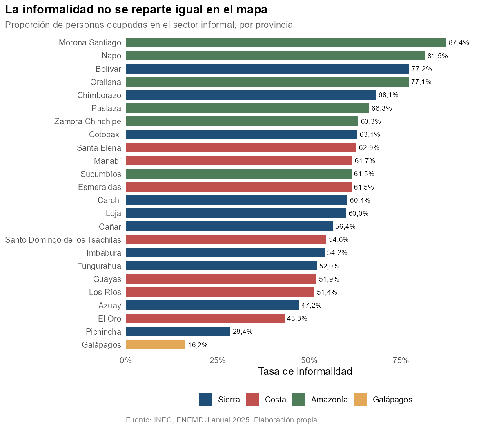
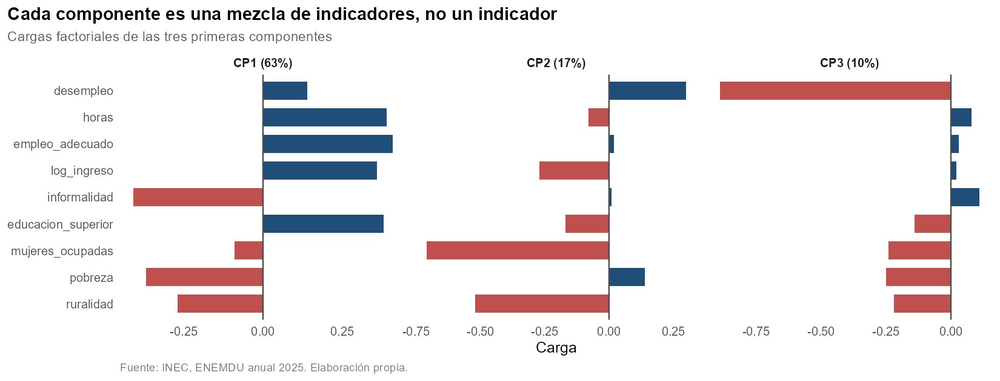
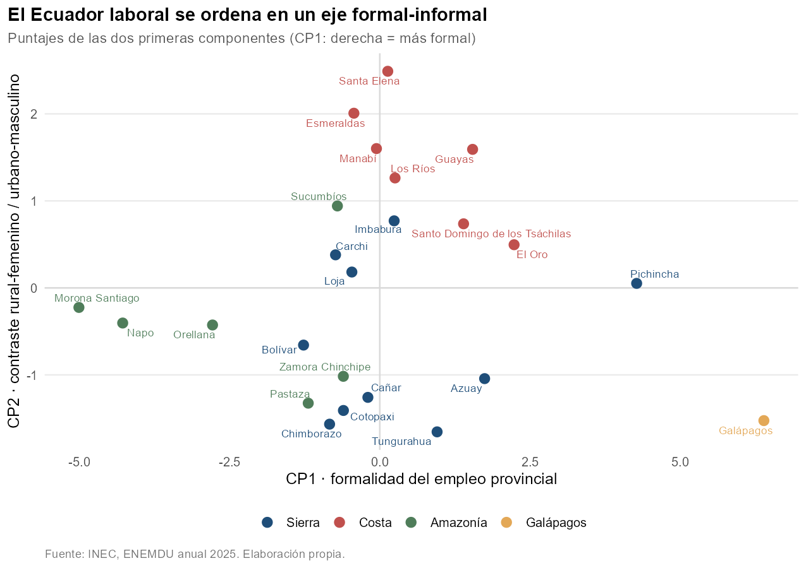
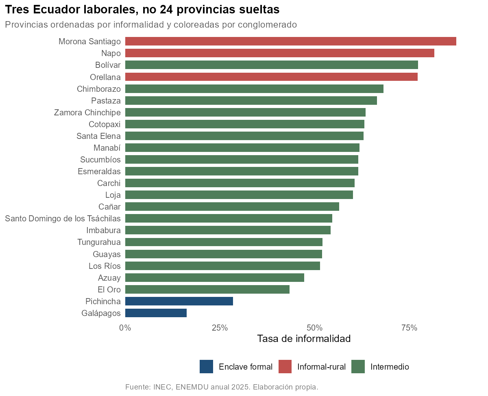
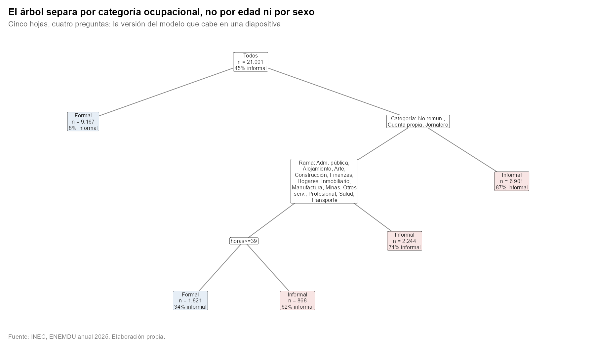
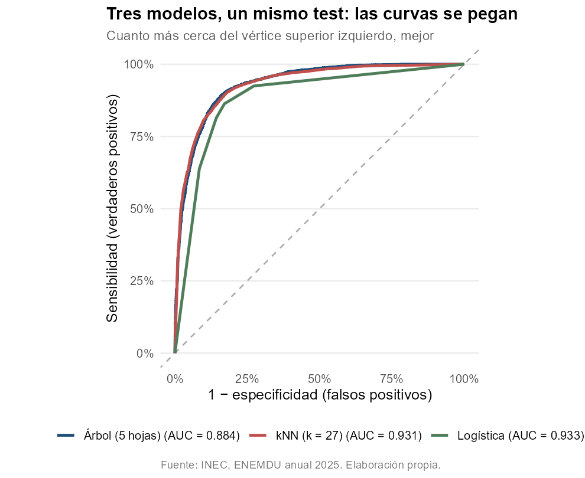
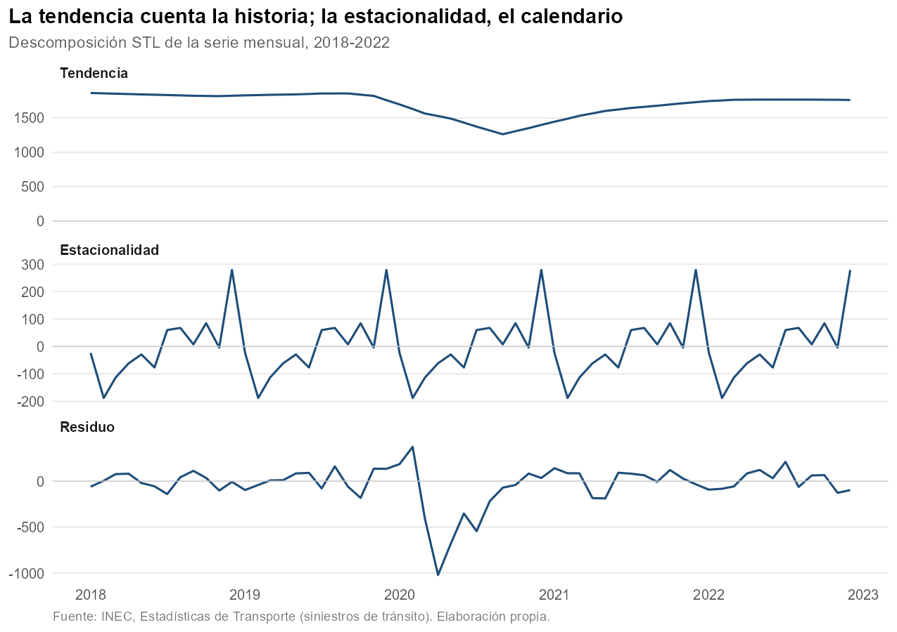
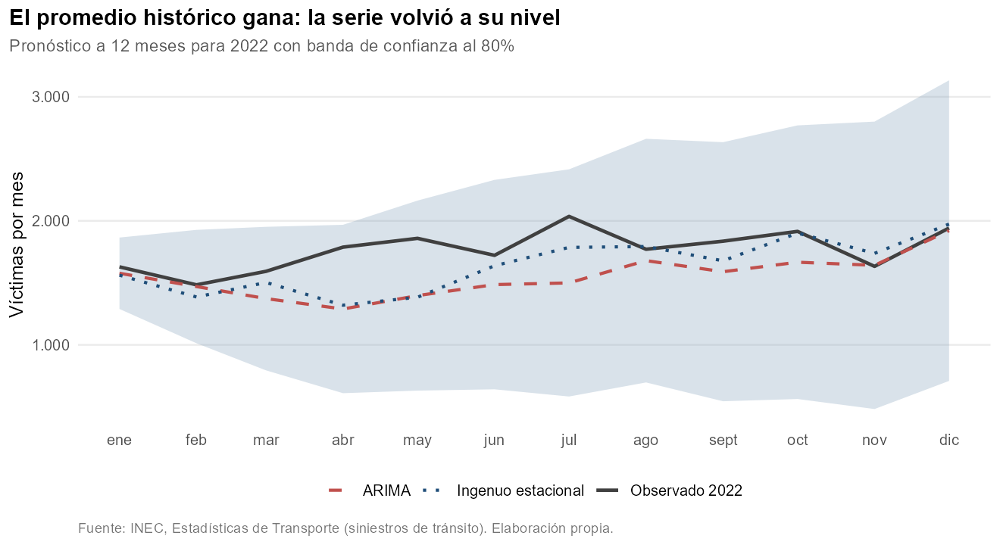

Cuatro sesiones, un proyecto, dos profesores en el aula.
Nada de ejemplos inventados: ENEMDU 2025 y siniestros de tránsito.
Enseñadas una detrás de otra, las seis técnicas del temario producen estudiantes que
saben escribir prcomp() y se detienen cuando la matriz trae un perdido, un
centinela de 999999 y una provincia con 2.400 casos.
Esta unidad se organiza al revés: se elige un proyecto que obliga a usar las seis técnicas, y cada técnica entra cuando el proyecto la necesita.
¿Dónde y en quién se concentra la vulnerabilidad laboral del Ecuador, y qué parte de ella se puede anticipar?
La pregunta tiene tres virtudes: se responde con datos que existen, admite un mapa, un modelo y un pronóstico, y no se agota en una técnica.
| Bloque | Pregunta del proyecto | Producto |
|---|---|---|
| 3.1 | ¿Qué datos sirven y en qué estado están? | Base analítica y bitácora de decisiones |
| 3.2 | ¿Cuántas dimensiones tiene la estructura provincial? | Índice de formalidad y tres regímenes |
| 3.3 | ¿Se puede anticipar la informalidad? | Tres clasificadores comparados con métricas |
| 3.4 | ¿Qué se puede pronosticar y con qué confianza? | Descomposición, pronóstico y su error |
La ENEMDU trae 12 meses: alcanza para leer una serie, no para ajustar un ARIMA estacional. En vez de forzar la tabla, se cambia de tabla y se mantiene el país.
Elegir la fuente también es parte del trabajo.
Una sola variable —secemp— y una decisión que hay que declarar:
qué cuenta como informal.
El proyecto empieza con una cifra que hay que poder defender.

sum(x) devuelve NA y el indicador desaparece sin avisar.-1 y 999999 no son ingresos: son códigos de no respuesta.fexp se describe la muestra, no el país.Y un cuarto, que no es del dato sino del analista: la tentación de borrar los ingresos altos «porque son atípicos».
Se excluye solo con criterio previo, documentado, y reportando el efecto.
Informalidad y empleo adecuado correlacionan −0,95. Con esa redundancia, nueve variables no describen nueve cosas.
63%
de la varianza provincial cabe en una sola componente. Dos componentes llegan al 80%.
Sin estandarizar, esa componente sería «ingreso» y nada más.



La silueta máxima aparece en k = 5, pero añade dos grupos que no aportan un tipo nuevo. Regla declarada antes de mirar el resultado: el k más pequeño con silueta a menos del 10% del máximo.
k-medias y Ward coinciden en el 100% de las asignaciones (índice de Rand ajustado = 1,000).
El nombre del grupo sale del perfil completo, no de una variable.
La informalidad se construye con el tamaño del establecimiento, el RUC y la contabilidad del negocio. Si esos campos entran como predictores, el modelo aprende la definición: 95% de exactitud y cero capacidad de anticipar.
Tampoco entra el ingreso: es consecuencia, no causa.


El árbol pierde cinco puntos de AUC frente a la logística, y aun así se elige cuando la decisión tiene que ser explicable ante una autoridad.
Elegir es decidir qué se gana y qué se pierde, y escribirlo.
El umbral se elige en entrenamiento, nunca en el test.


El ARIMA arrastra el nivel deprimido de 2021 y pronostica por debajo. El residuo conserva autocorrelación (Ljung-Box, p = 0,033): el modelo está mal especificado.
La lección no es «ARIMA no sirve». Es que el diagnóstico manda y que el ingenuo es el estándar que hay que vencer.
sessionInfo().Se evalúa el repositorio y un informe de cuatro páginas. La rúbrica se entrega el primer día.
00_setup.R fija la semilla 20261112 y el tema gráfico.
Cada script lee lo que dejó el anterior y escribe en salidas/.
Si el análisis cambia, el documento cambia: 08_documento.R
arma el plan de clase leyendo los objetos que dejaron los demás.